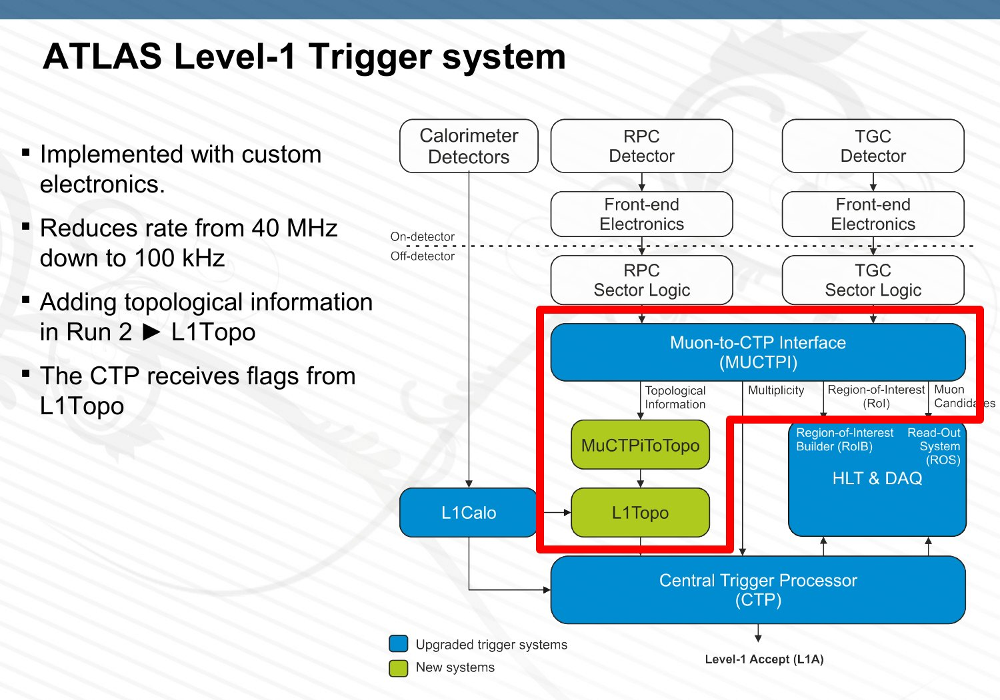
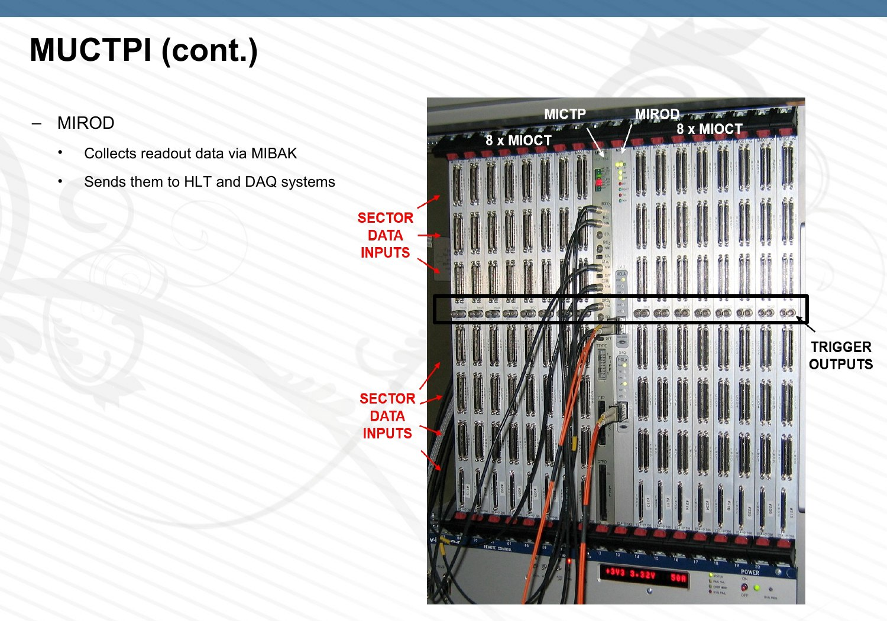
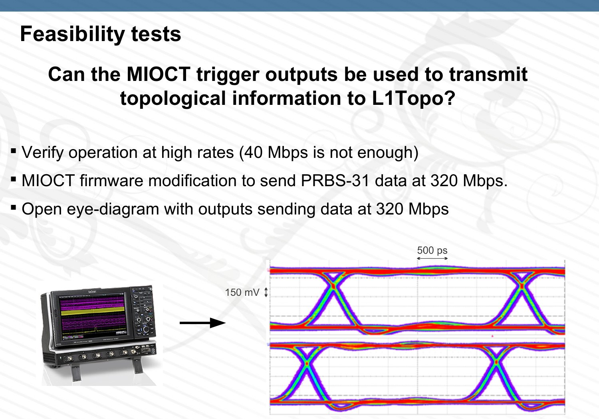
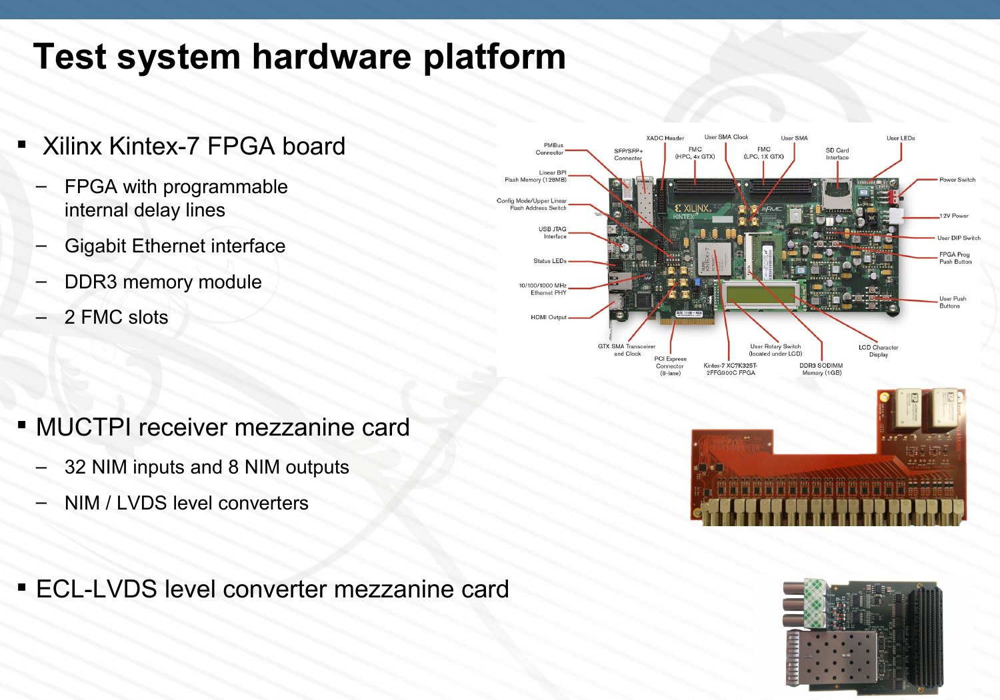
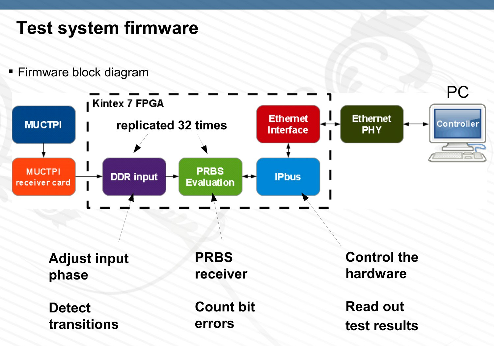
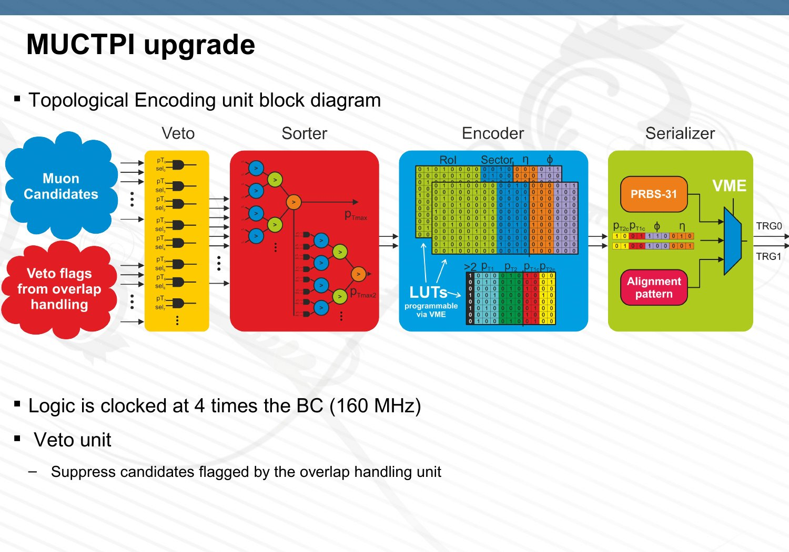
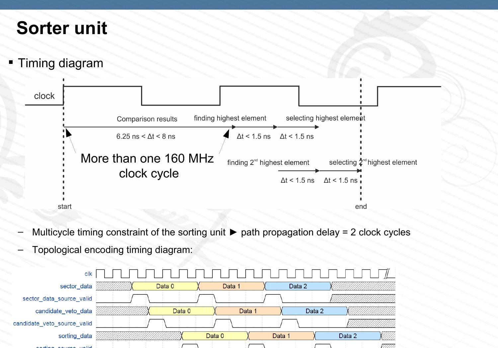
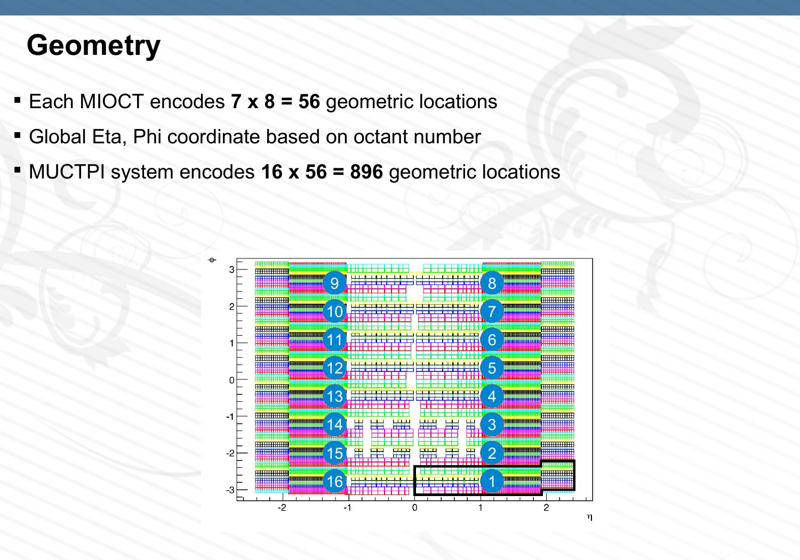
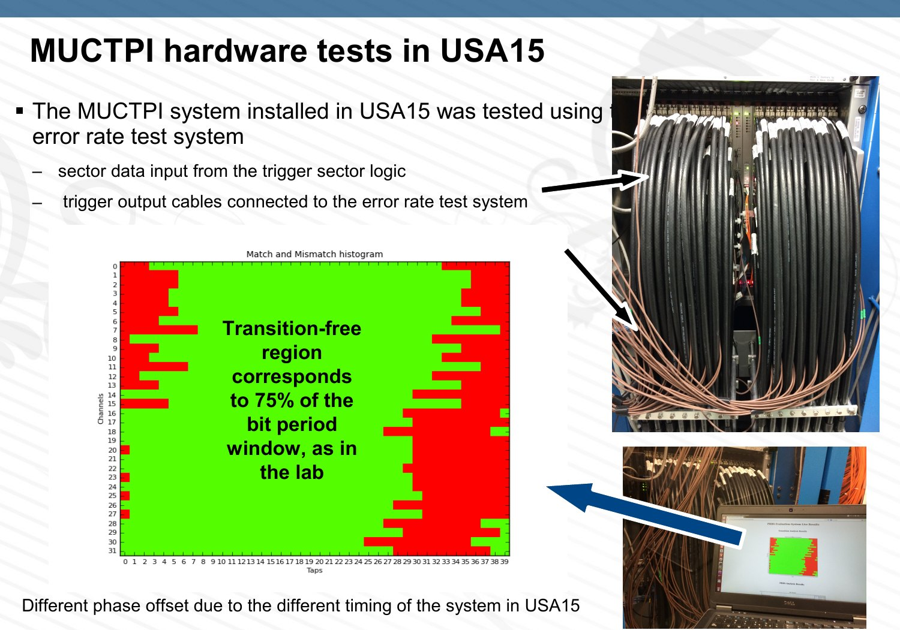

During the first run of the LHC, the first-level trigger of ATLAS knew how many muon candidates a bunch crossing had produced and which momentum thresholds they had passed. It did not know where they were. For Run 2 a new processor, L1Topo, was going to select events on geometry: angles and effective masses computed between trigger objects. It needed a position for every muon, 40 million times per second. My master's work was to get that information out of a system that had no output for it.
The system as it was
The first-level trigger is built from custom electronics. It reduces the rate of bunch crossings from 40 MHz to about 100 kHz before anything is read out, and it has a few microseconds to do so. The muon part of it starts at two kinds of detector: Resistive Plate Chambers in the barrel and Thin Gap Chambers in the endcaps. Their sector logic estimates the transverse momentum of each candidate from how much its track is bent by the toroid magnets. The higher the momentum, the smaller the bending.

The Muon-to-Central-Trigger-Processor Interface (MUCTPI) sits between the muon trigger detectors and the Central Trigger Processor. The detectors are divided into 208 trigger sectors, and each sector sends its two highest-momentum candidates per bunch crossing. Sixteen octant modules (MIOCT) in a 9U VME crate each take 13 sectors, remove the candidates that two overlapping sectors report twice, and count what is left for each of six momentum thresholds. The backplane adds up the counts and the result goes to the Central Trigger Processor. The position of each candidate was only read out after the event had been accepted.
The 208 sectors are organised geometrically. The system has two halves, each half has eight octants, and each octant has thirteen sectors: four from the barrel, six from the endcap and three from the forward region. That is why each MIOCT takes 13 inputs. Two more modules complete the crate of 18: the MICTP, which receives the timing signals and forwards the total multiplicity to the Central Trigger Processor, and the MIROD, which collects the readout data over the backplane and sends it to the high-level trigger and data acquisition.

Each MIOCT has two electrical outputs on its front panel. They were foreseen for testing, and in Run 1 they flagged the presence of at least one candidate in a selectable region. They were specified for 40 MHz, one bit per bunch crossing, which is not enough even for a coarse position. There were 32 of them in the crate, and they were the only way out.
The proposal was to overclock them by a factor of eight, to 320 Mb/s, giving eight bits per bunch crossing on each output, with no change to the hardware. Nobody had run those outputs above 40 MHz, so the first question was whether they could do it.
Finding out whether it would work
I modified the MIOCT firmware to send a pseudo-random bit sequence (PRBS-31) at 80, 160, 240 and 320 Mb/s. A pseudo-random sequence matters here because it contains both short and long intervals between edges, like real data, so it exposes data-dependent jitter that a fixed pattern would hide. An oscilloscope eye diagram accumulated over 30 days was open at 320 Mb/s.

That was encouraging and not sufficient. The oscilloscope checks the transmitter only: it has no setup and hold times like a real receiver, and it samples so sparsely that it cannot see errors that occur rarely. So I built an error-rate test system on a Xilinx KC705 evaluation kit. A mezzanine card built by Nikhef received the 32 outputs, and a second one the clock. The FPGA was controlled over Ethernet with IPbus, and a Python program ran the tests and published live results on a web page.
The hardware was deliberately ordinary. The KC705 board carries a Kintex-7 FPGA with programmable delay lines on its inputs, a Gigabit Ethernet interface, a DDR3 memory module and two FMC slots for mezzanine cards. The MUCTPI receiver card adapted the 32 NIM-level trigger outputs to LVDS, and a second card converted the ECL clock of the experiment. In the firmware, one receiver chain was replicated 32 times: an input stage to adjust the sampling phase and detect transitions, a PRBS checker to count bit errors, and IPbus to control everything from the PC and read out the results.


The receiver had one problem to solve. The programmable input delay of the FPGA has 32 taps of 78.125 ps, 2.5 ns in total, while a bit at 320 Mb/s lasts 3.125 ns. The delay line alone cannot scan a full bit. I sampled its output with four clock phases 90 degrees apart, using the input deserialiser in its oversampling mode, and ran the logic at 160 MHz. Each phase then needs only 20 taps, and four phases times 20 taps give 80 sampling positions over two consecutive bits, 40 per bit period.
To see where the signal changes, a second copy of the input is delayed by one extra tap, about 80 ps, and compared with the first. If the two differ, there was a transition between those two instants. Scanning all positions gives a map of where the data is moving and where it is stable. In parallel, a PRBS checker counts bit errors at the chosen sampling point.

What the scan showed
On all 32 outputs, 75% of the bit period was free of transitions. The unstable region was 625 ps wide, eight taps. Runs of 120 hours at the edges of that region showed no drift of the clock phase larger than 80 ps.
At the centre of the stable region, about 1.38 × 1014 bits per output were received without a single error, 4.42 × 1015 bits over the 32 outputs. That puts the bit error rate below 10−15 with a confidence level of 98.8%. The target had been set at no more than one error per day over all outputs together.
Eight bits per muon
With the channel proven, the MIOCT firmware got a new processing chain: veto, sorter, encoder, serialiser. The veto drops the candidates that the overlap logic has flagged. The sorter then has to find the two highest-momentum candidates among the 26 of an octant.

A sequential search with one comparator at 160 MHz would take 26 clock cycles, 162.5 ns, more than the roughly 125 ns the whole MUCTPI takes. So all 325 pairwise comparisons are made at once. The candidate that wins every comparison in its row is the highest. A second copy of the comparison matrix, with the winner's results negated, gives the second. The comparison stage did not fit in one 6.25 ns clock cycle, so the path is declared as a two-cycle path, 12.5 ns, and each unit passes a valid flag to the next so that no unit needs to know the delay of the others.

The encoder turns each of the two candidates into eight bits: three for pseudorapidity η, three for the azimuthal angle φ and two for momentum. One η code is reserved for "no candidate". The original six momentum thresholds are mapped onto three programmable ones, and the spare code of the second candidate says that the octant had more than two. The average bin is about 0.3 × 0.1 in η and φ. All the mappings are look-up tables that can be reloaded. Sixteen octants times 56 codes give 896 distinct positions, and the 32 outputs carry 10.24 Gb/s in total.
Each MIOCT encodes 7 × 8 = 56 locations within its octant, and the octant number turns them into global η and φ coordinates. The map in the defence slides shows the result: sixteen octants side by side, each divided into the same grid of bins.

Checking it
The new logic was compared with a behavioural model in VHDL simulation over 185 thousand bunch crossings. Then the real hardware was tested by loading random sector data into the test memory of the MIOCT and reading back the encoded result: 1.4 billion bunch crossings, checked against the software model. That test stops before the serialiser, so I extended the test system to receive the serial data from all 16 modules, align it and store it in DDR3 memory. Over three days it checked 1010 bunch crossings without an error.
Integration with the electrical-to-optical converter (MuCTPiToTopo) and with L1Topo followed. Known patterns were read back correctly over 2.6 million and 258 thousand bunch crossings. Those numbers are small because the read-out of the two systems was slow, and the thesis says plainly that they are not enough to claim a low error rate. Finally I carried the test system to the ATLAS counting room and repeated the phase scan on the installed MUCTPI. The unstable region was again 25% of the bit period.
The only difference was where the unstable region sat within the bit period, because the timing of the installed system is not the same as in the lab. The width, which is what decides whether the link is reliable, was the same.

What stayed with me
The oscilloscope picture looked like proof and was not. The useful measurement was made at the receiver, with the receiver's own limitations, over enough bits to put a number and a confidence level on the result.